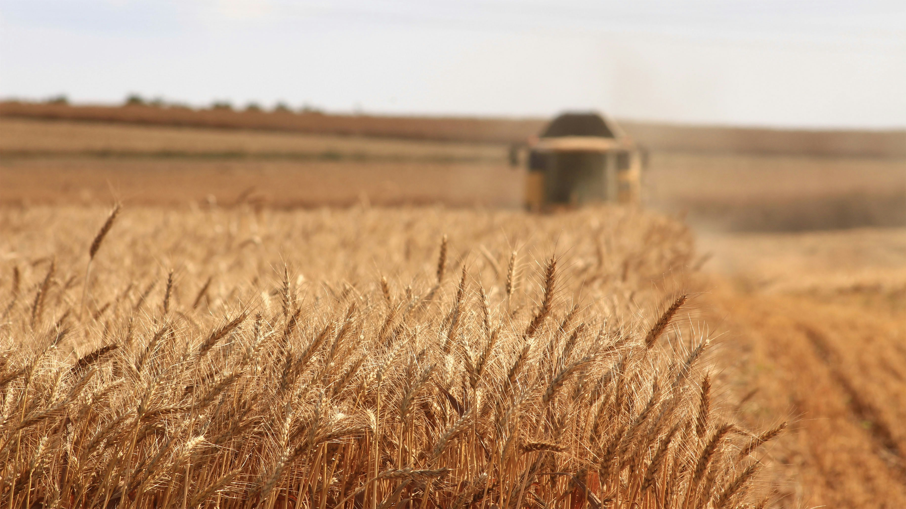

Conventional Agriculture & Controlled Environment Agriculture | NAICS 111, 112, 1114
53.1M irrigated acres, $3.3B/yr pumping energy. Ogallala Aquifer lost 286M acre-feet (~9%) since predevelopment.
Soil N₂O (49%) + enteric methane (32.5%) = 663.6 MMT CO₂e. Non-CO₂ gases lack scalable mitigation.
4.7% of farms (89,210 operations) produce 75% of all sales. Technology adoption skews heavily to large operations.
"The top 4.7% of farms (89,210 operations) account for 75% of all sales — the top 3,785 farms account for 25%."
Total market value of all agricultural products sold
Source: USDA NASS, 2022 Census of Agriculture
Revenue breakdown across major agricultural commodities
Source: USDA ERS Farm Income and Wealth Statistics, 2025
663.6 MMT CO₂e — ~10% of U.S. total emissions
Source: USDA/EPA Inventory of GHG Emissions, 2024
Comprehensive pre-interview research findings
U.S. agriculture generates over $513 billion in annual commodity receipts1 across 1.88 million farms and 880 million acres2, anchoring a food and agricultural system that supports 22.1 million jobs and contributes roughly $1.5 trillion to GDP. The sector faces a defining tension: it must continue to increase output and affordability while addressing severe structural vulnerabilities in water, energy, emissions, and labor.
Agriculture directly consumes approximately 1,872 TBtu of primary energy annually (~1.9% of U.S. total) and generates 663.6 MMT CO₂e in greenhouse gas emissions (~10% of U.S. total)4. Critically, the sector's emissions are dominated by non-CO₂ gases — soil nitrous oxide (49%) and enteric methane (32.5%) — that lack the scalable engineering mitigation pathways available for CO₂16.
Farm consolidation continues to accelerate: the top 4.7% of farms now account for 75% of all sales, and the top 3,785 farms account for 25%12. This concentration shapes technology adoption, policy reach, and the economic resilience of rural communities. DOE R&D investments that target the structural energy, emissions, and water challenges of the sector can deliver outsized returns in competitiveness, affordability, and climate mitigation.
The agriculture subsector encompasses NAICS 111 (Crop Production) and NAICS 112 (Animal Production and Aquaculture), along with NAICS 1114 (Greenhouse, Nursery, and Floriculture Production) for controlled environment agriculture.
Crop production (NAICS 111) covers field crops (corn, soybeans, wheat, cotton, rice), specialty crops (fruits, vegetables, tree nuts), and oilseeds. In 2024, crop cash receipts totaled $244.9 billion across 311.2 million harvested acres13. Corn alone accounted for $82.0 billion on 91.5 million planted acres, with a record yield of 179.3 bushels per acre14. Soybeans contributed $30.7 billion on 87.1 million planted acres. Specialty crops — defined by USDA as fruits, vegetables, tree nuts, dried fruits, horticulture, and nursery crops — generated approximately $58.3 billion, with California producing roughly 50% of U.S. specialty crop value.
Animal production (NAICS 112) includes cattle and calves, dairy, poultry and eggs, hogs, and aquaculture. Livestock cash receipts reached $268.6 billion in 20241, with cattle and calves alone contributing $112.1 billion at record per-head prices of $186.86/cwt17. Poultry and eggs generated $70.2 billion (9.33 billion broilers and 109 billion eggs), dairy contributed $50.7 billion (226 billion pounds of milk from 9.57 million cows), and hogs produced approximately $27.2 billion from a 75.5 million head inventory. Aquaculture remains relatively small at $1.9 billion across 3,453 farms20, though the U.S. imports over 79% of the seafood it consumes.
CEA (subset of NAICS 1114) encompasses greenhouse vegetable production and indoor vertical farming. Greenhouse vegetable sales totaled $1.34 billion across 133 million square feet of protected growing space in 11,465 CEA operations (2022 Census)2. CEA offers 10–20x yield improvements over open-field production and 90–95% water savings, but faces severe energy cost constraints that currently limit commercial viability, particularly for indoor vertical farms.
Adjacent sectors: Agriculture's upstream connections include fertilizer manufacturing (NAICS 3253), agricultural chemical manufacturing (NAICS 3253), farm machinery (NAICS 3331), and irrigation systems (NAICS 3332). Downstream connections include animal slaughter/processing (NAICS 3116), grain and oilseed milling (NAICS 3112), and dairy product manufacturing (NAICS 3115).
U.S. agriculture is characterized by extreme market concentration. While the USDA counts 1.88 million farms, the vast majority are small operations: 73% of farms have gross cash farm income under $100,000 and account for just 4% of total agricultural output9. The average farm size is 471 acres (up 5% from 2017)3, but this figure masks enormous variation from hobby farms under 50 acres to operations exceeding 50,000 acres.
Top producing states by market value (2022 Ag Census): California ($59.0B), Iowa ($43.9B), Texas ($32.2B), Nebraska ($29.4B), Minnesota ($28.5B), Illinois ($26.4B), Kansas ($24.0B), North Carolina ($18.7B), Indiana ($18.0B), and Wisconsin ($16.7B)2. California alone produces approximately 13% of U.S. agricultural output by value, dominating in specialty crops, dairy, and almonds. Iowa leads in corn, soybeans, and hogs, producing one-third of all U.S. hog inventory.
Farm typology (ERS classification): Small family farms (GCFI <$350K) account for 89.6% of all farms but only 21% of production value. Midsize family farms ($350K–$999K) are 5.7% of farms and 16% of value. Large family farms ($1M+) are 3.4% of farms and 47% of value. Non-family farms are 1.3% of farms and 16% of value12. The ongoing consolidation trend means fewer, larger operations are producing an increasing share of output.
Input supply concentration: Four companies (Bayer/Monsanto, Corteva, BASF, Syngenta/ChemChina) control roughly 60% of the global seed and crop protection market. In farm equipment, three firms (Deere, CNH Industrial, AGCO) dominate the large machinery market. In fertilizer, five companies (Nutrien, Mosaic, CF Industries, Koch Fertilizer, OCI) control the majority of North American nitrogen and phosphate production.
Processing/buyer concentration: In meatpacking, four firms (Tyson, JBS, Cargill, National Beef/Marfrig) process approximately 85% of U.S. fed cattle and 70% of hogs. In grain trading, four companies (Cargill, ADM, Bunge, Louis Dreyfus — "ABCD" firms) handle an estimated 70–90% of global grain trade. This dual concentration (large farms upstream, large processors downstream) creates competitive pressure on midsize operations.
Agricultural production processes span the full biological and mechanical spectrum, from soil preparation and planting through harvest, post-harvest handling, and animal husbandry.
Crop production follows a seasonal cycle: tillage/soil preparation, planting, nutrient application (fertilizer, lime), pest management (herbicides, insecticides, fungicides), irrigation, harvest, and grain drying/storage. Energy inputs include diesel for field operations, electricity and natural gas for irrigation pumping, and propane/natural gas for grain drying.
Livestock production involves feeding, watering, climate control (heating/cooling barns), manure management, and milking (for dairy). Energy inputs include electricity for ventilation, lighting, and milking systems; propane/natural gas for heating; and diesel for feed mixing and transport.
CEA production uses supplemental lighting (LEDs), HVAC, fertigation, and CO₂ enrichment systems in enclosed environments. Energy is the dominant operating cost, accounting for 25–35% of total costs in greenhouses and up to 50% in indoor vertical farms.
U.S. agriculture produces food, feed, fiber, and fuel for both domestic consumption and export. The U.S. is the world's largest agricultural exporter, with $170+ billion in annual agricultural exports11. Key export commodities include soybeans, corn, tree nuts, beef, pork, and dairy products.
Upstream inputs include seeds, fertilizers, crop protection chemicals, fuel, machinery, irrigation water, animal feed, and veterinary products. Total production expenses reached approximately $467 billion in 20241.
Downstream connections link to food processing (NAICS 311), beverage manufacturing (NAICS 312), animal slaughter/processing, grain elevators, and commodity trading. The food dollar series shows that the farm share of the consumer food dollar is approximately 14.3 cents — the remaining 85.7 cents goes to processing, transportation, retail, and foodservice.
Several forces are reshaping U.S. agriculture:
Key technologies: GPS/autosteering (70% adoption on large farms)5, yield monitors, variable-rate application, drone and satellite imagery, soil sensors, automated irrigation controls, robotic milking systems, and anaerobic digesters.
Energy inputs: U.S. agriculture consumes approximately 1,872 TBtu annually. Diesel dominates field operations; electricity and natural gas drive irrigation pumping6; propane/natural gas is used for grain drying and livestock facility heating. Fertilizer production (upstream) is one of the most energy-intensive chemical manufacturing processes.
Byproducts and waste streams: Crop residues (corn stover, wheat straw), animal manure, food processing waste, and post-harvest losses. Anaerobic digestion can convert manure into biogas (400 operating farm digesters; 8,000+ additional farms are technically suitable)7. Crop residues have potential as biofuel feedstocks but compete with soil health benefits of residue retention18.
Input suppliers: Deere & Company ($61.3B revenue), CNH Industrial, AGCO, Bayer Crop Science, Corteva Agriscience, Nutrien, The Mosaic Company.
Processors/buyers: Cargill ($177B), Archer Daniels Midland, Bunge, Tyson Foods ($53B), JBS USA, Dairy Farmers of America.
Technology providers: Trimble, Raven Industries (CNH), Climate Corporation (Bayer), Monarch Tractor, Solectrac, Blue River Technology (Deere).
Trade associations: American Farm Bureau Federation, National Cattlemen's Beef Association, National Pork Producers Council, United Dairymen, National Corn Growers Association.
Federal agencies: USDA (NRCS, FSA, ARS, ERS, NASS), DOE (EERE, BER), EPA, Army Corps of Engineers (water infrastructure).
The agricultural sector faces several interconnected energy and technology challenges that represent high-priority targets for DOE R&D:
U.S. agriculture is globally competitive but faces growing structural headwinds. Total factor productivity growth has averaged 1.4% annually since 1948, but the rate has slowed in recent decades. Key competitiveness metrics:
The agricultural sector stands at an inflection point. Key trends shaping the 2025–2035 outlook:
The following authoritative sources underpin the data and claims in this subsector profile. In-text superscript markers link to the corresponding numbered entry below.
GPS autosteering and variable-rate application. 70% adoption on large farms; significant efficiency gains in input use.
Pressurized sprinkler/drip systems, pump VFD upgrades, ET-based scheduling. Proven 20–40% water savings.
Manure-to-biogas on dairy and hog operations. 400 operating digesters; 8,000+ additional suitable farms.
USDA REAP: 8,012 projects funded. IRA allocated $2B+ for agricultural clean energy deployment.
Autonomous harvesters for labor-intensive crops. Reliability and field servicing constraints remain key barriers.
Integrated LED + HVAC controls targeting <5 kWh/kg for leafy greens. System-level optimization is critical.
3-NOP/Bovaer: FDA approved 2024. 20–30% enteric methane reduction in trials; adoption is still minimal.
M&V frameworks for pumping energy optimization. Improved energy-water accounting at the field level.
Battery tractors (Monarch, Solectrac, Deere pilots): 4–8 hr battery life vs. all-day diesel. Rural charging infrastructure is minimal.
Soil carbon sequestration via crusite/basalt application. MRV methodologies are under review; scalability uncertain.
Successor to Climate-Smart Commodities. Reshaping practice incentives and MRV requirements for agricultural emissions.